baseline
baseline


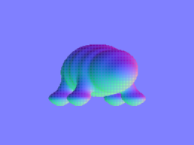
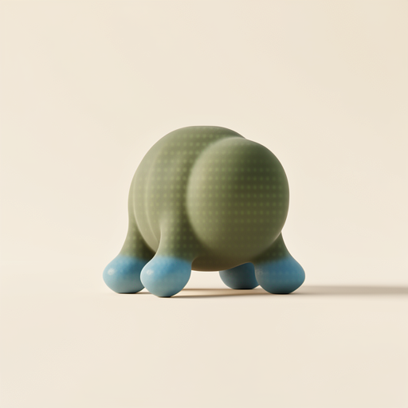
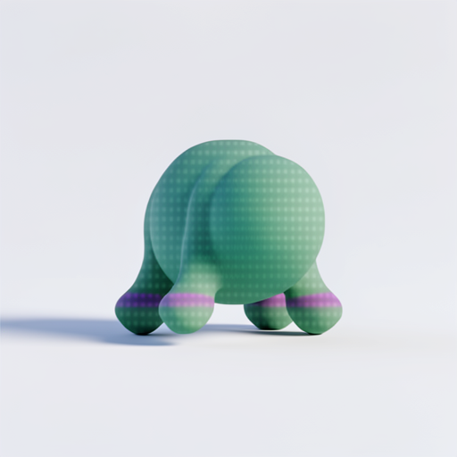
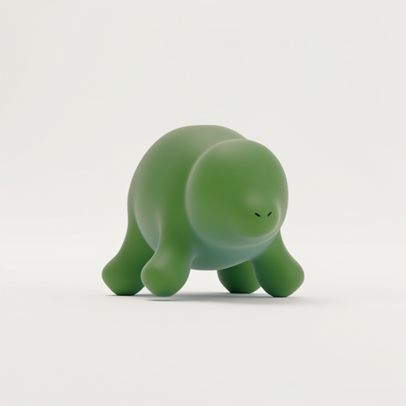
body-long
bodyLength: 1.05 → 1.28
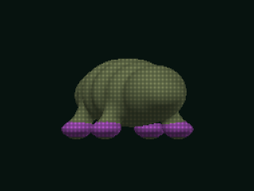
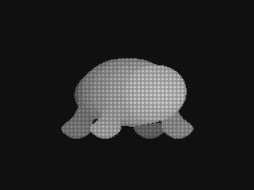
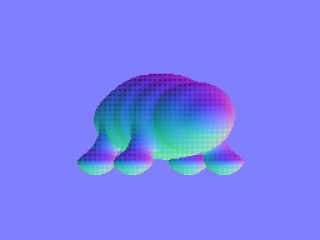
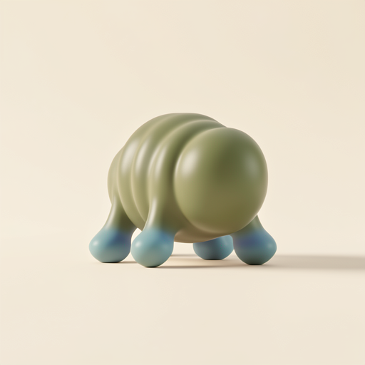
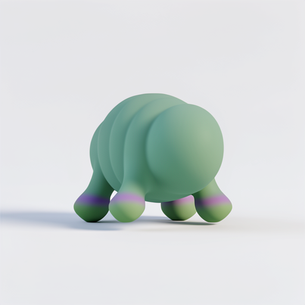
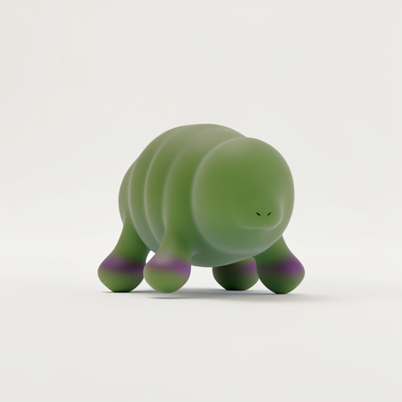
body-deep
bodyDepth: 0.36 → 0.48
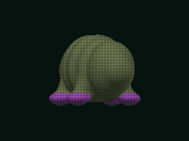
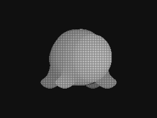
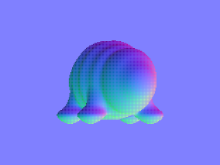
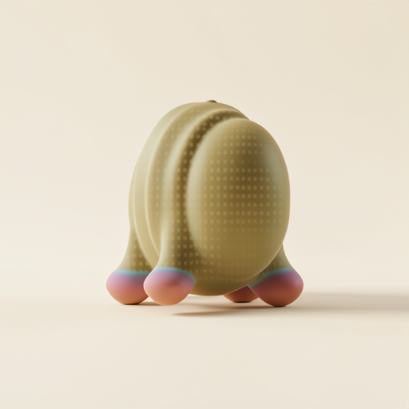
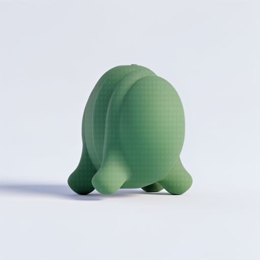
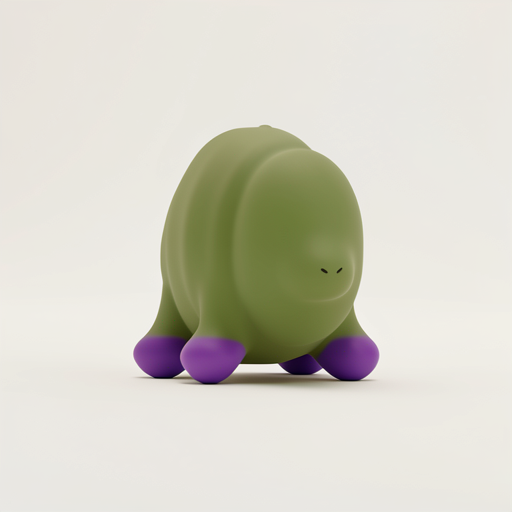
dorsal-arched
dorsalArch: 0.03 → 0.2
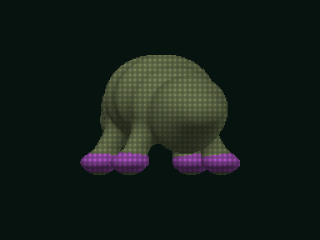
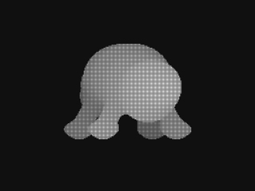
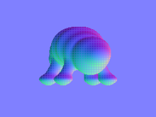
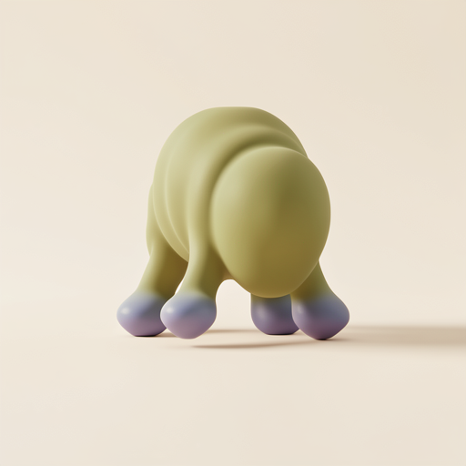
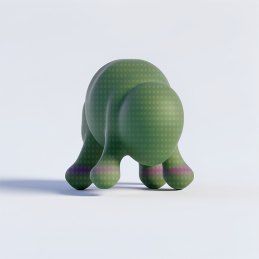
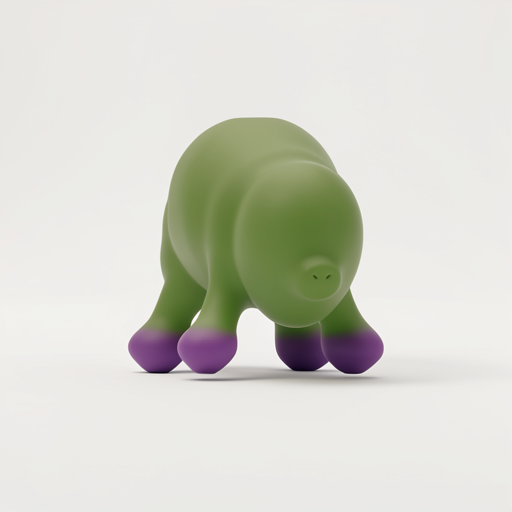
posterior-heavy
posteriorMass: 0.85 → 1.3
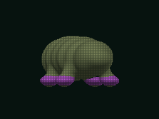
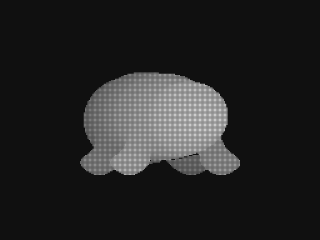
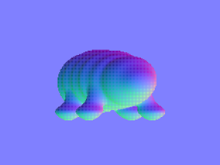
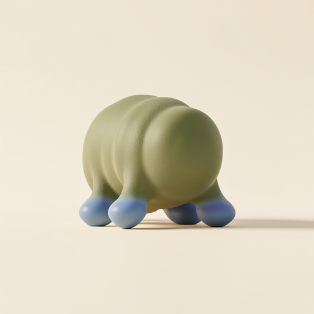
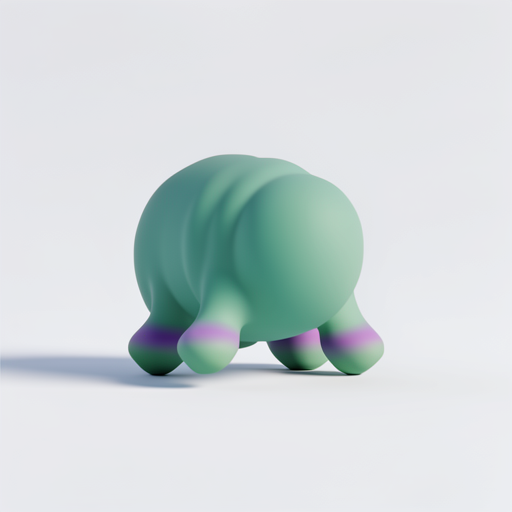
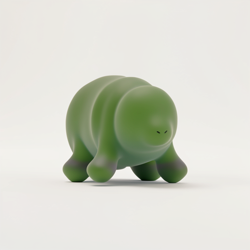
supports-wide
supportSpacing: 0.52 → 0.72
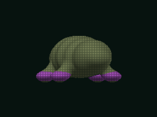
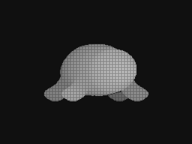
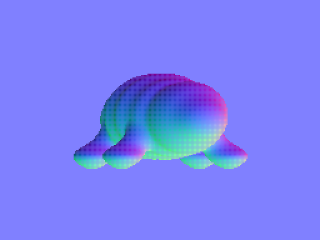
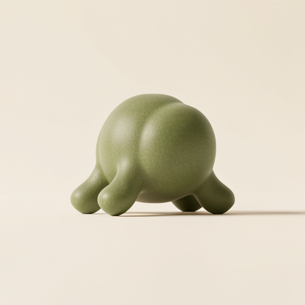
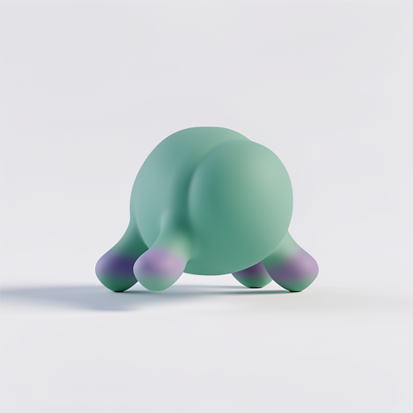
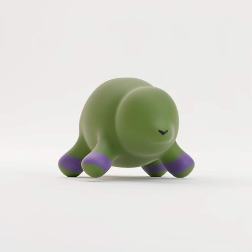
supports-long
supportLength: 0.32 → 0.5
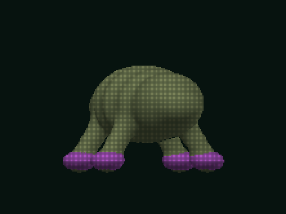
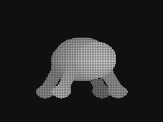
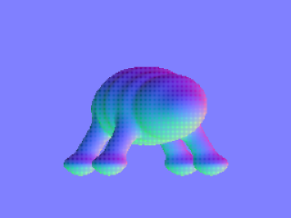
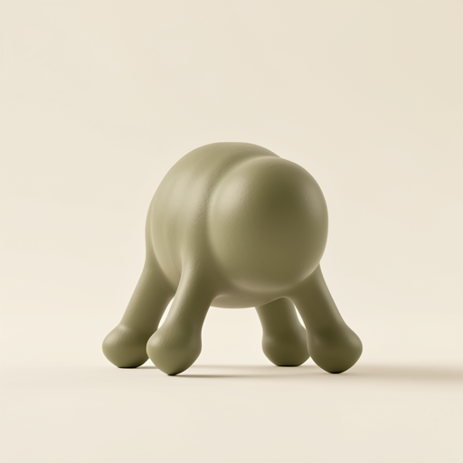
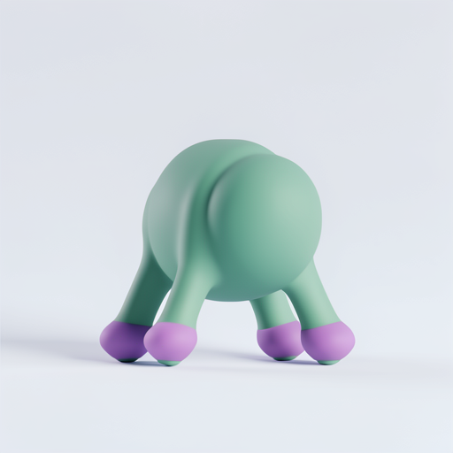
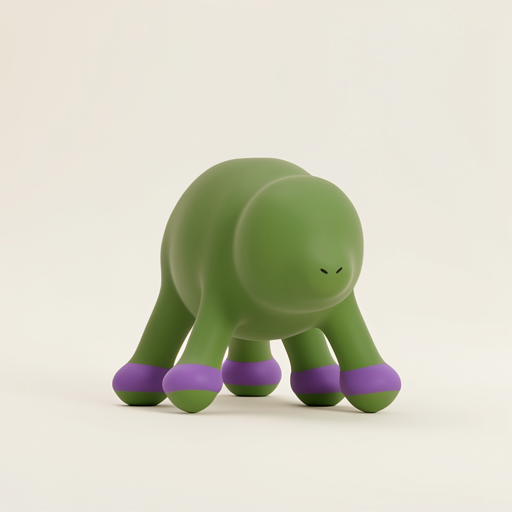